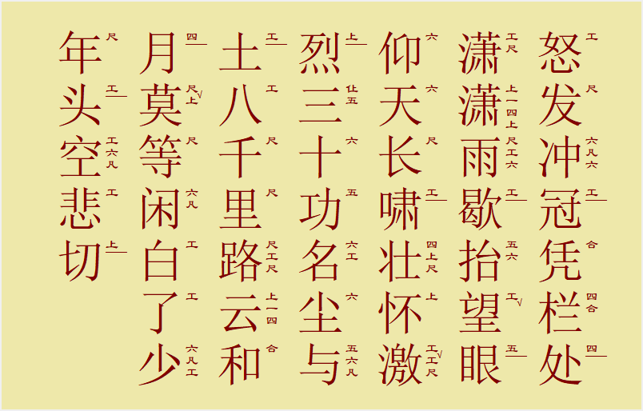
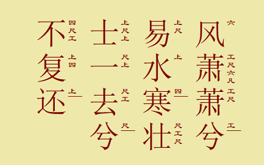

李硕学 化学与分子工程学院 1800011839
在我上《经典昆曲欣赏》课程与加入京昆社之前，我对昆曲的印象便集中在最经典的《牡丹亭·游园》中。对昆曲细节的理解也就只是南昆中介于南北方言之间的咬字了。而这学期，在第一节昆曲欣赏课上，周万江老师及其弟子的精彩表演使我知道，昆曲不仅可以展现江南烟雨的细腻和才子佳人的风华，更能通过北昆的支脉展现出燕赵慷慨苍凉之气。之后京昆社的日常清曲拍习活动中，我学习了北曲《天官赐福》的几个曲牌，对北昆的特点有了初步的认识。
而最终促使我产生用北昆风格吟唱古诗词想法的，是接近期中的一节课。苏州大学的周秦老师为我们展示了昆腔音乐和唐宋词乐的渊源关系，以及如何“以歌曲之法歌词”，即以昆曲的调式风格将唐诗宋词表现出来。老师在上课时以南昆之腔吟唱了蒋捷的《虞美人·听雨》、《一剪梅·舟过吴江》等词，相较一般的朗读，昆腔与古代声韵更加贴合，从而能以更大的艺术张力表现词中的世间百景、人情冷暖。自那时起我便想，既然南曲能使婉约词声情并茂，那源于“辽金北鄙之音，武夫马上之歌”的北曲，也应能将“铁马冰河入梦来”的豪迈、“壮士一去兮不复还”的悲壮体现得淋漓尽致罢。因此期末作业中我有了用昆腔北曲来再诠释诗词的想法。
至于这次小尝试之形式，在几经斟酌之后，我选择了写Python程序，通过输入诗词等信息来自动生成靠近昆腔北曲风格的工尺谱和midi伴奏。一则因为该方式可以帮助我整合，乃至运用半个学期课上与社团中所学的昆曲知识，增进我对昆曲“依字行腔”等特点的理解；二则因为昆曲在腔调上有很强的程式性，而古诗词在平仄中也有规范，从而便于实现如此传统与现代之间的碰撞交融：毕竟倘使能让“无情”的电脑谱写“有情”之曲，莫不是一番快事；三则因为此学期的《经典昆曲欣赏》课程时间与我想选的一门有程序实习作业的课相冲突，这个方式恰可对我撞课的缺憾加以弥补。
让一行行冰冷的代码奏响燕赵慷慨，需要用其能理解的形式，诉以昆腔北曲之风。在此先权且回顾课程与社团中所学北曲腔调的一些较为显著的特点：
基于上面的理论基础，我在程序输入中便有如下的重要考虑：
所生成的曲谱基于一个腔调文件 （附件中之TUNECAR文件）。其中囊括了北曲中常用的行腔，并包含了其所配声调、衔接音符等信息。其中举一例如下所示：
C5 CA 1216 00000100 0001 仩√仩五 c53-d51-c52-a42
第一列C5表示该强调始于“仩”，为粗略确定曲调走向时所用；
第二列CA表示该腔形如“仩五”，是初始总结行腔时的分类；
第三列1216表示该腔为“仩伬仩五”，（实际为嚯腔“仩√仩五”，如第六列所示），也是最初总结北曲单字行腔时的表记方式；
第四列00000100表示该腔后面可以跟以何音符起始的腔。八位从左往右依次为从“合”到“仩”的五声调式；只在第六位有一个1表明“仩√仩五”凭经验规则只能后跟以“六”起始的腔；
第五列0001表示该腔适配何种声调的字。“仩√仩五”为嚯腔，一般适用于去声字。虽然规则有例外，但在此简化起见，假定“仩√仩五”只能配去声字，即只在第四位有1；
第七列c53-d51-c52-a42表示该腔中每个音的实际音高与时长。以“-”分隔的三位字符中，前两位表示音高（“c5”为“仩”，“a4”为“五”等），第三位为该音的时值，c53表示“仩”大致唱3/8拍。该行的意义在于它便于在生成midi文件时被识别。此外，其它行中还存在r01一类的字符，其中的r0表示休止符，1表示它时长1/8拍，即有一个小换气。
诗词文件中不仅有诗词的文字，还包含声调等其它信息。以《易水歌》简单地举例如下：
xxxxxxxxxxMAJOR = ETEMPO = 30BEGIN LYRICS风萧萧兮 1111 G4 E4易水寒 432 C4 A3壮士一去兮 44341 D4 D4不复还 332 A3 C4END LYRICS
MAJOR表示全曲整体调式，MAJOR = E即简谱中的"1 = E"；
TEMPO表示全曲整体的速度，TEMPO = 30即每分钟30拍；
歌词行自BEGIN LYRICS起始，自END LYRICS终止，曲调在中间每一行的末尾拍一次散板。各列之意义以“不复还”一句为例：
3；A3 C4表明“不复还”句以“四”音发轫，以“上”音收束。在输入文件时加入起始终止音的考量，也在一定程度上融合了个人对诗词情感的把握。如“风萧萧兮”一句以“六”音高起，在“易水寒”之末尾以“四”音低收，高低错落有致，便以景之萧瑟暗含环境之紧张；而“壮士一去兮不复还”从“尺”到“上”平起平收，则可表明荆轲刺秦斩钉截铁之决心（此外，我在输入文件中【尺→尺，四→上】音调走向的考虑还受到了京剧架子花脸行腔的影响）。
相应地，主程序main.py之运行情况则设计如下：
generate_base函数来承担；generate_notes函数来承担。tkinter，由write_gongche函数进行每一个字工尺谱的书写；生成midi文件时调用我过去用来谱曲而写的模块Songwriter（在程序Songwriter.py中，该模块本身调用mido模块而完成），先以repre_note函数将腔调文件的第七列转化为Songwriter可读谱的形式。最后在函数compose中完成工尺谱与midi的制作。启动古诗词北曲谱写程序时，需预先在电脑上安装Python 3.7，并且确定所需的mido、numpy和tkinter包已经安装好。之后在附件程序的目录之下打开命令行，输入命令之用法参见如下例子：
xxxxxxxxxxpython main.py -i 易水歌.txt -o 易水歌.mid -r 4其中-i之后的参数表示输入的诗词文件名称（易水歌.txt），-o之后的参数表示输出的midi文件名称（易水歌.mid），-r之后的参数表示展示的工尺谱的行数（4）。输入命令后在当前目录中可播放midi文件，并在界面上看到工尺谱。
以岳飞《满江红·怒发冲冠》之上阙为例（输入文件为满江红.txt，所标声调可能不准确），某次生成的工尺谱如下图所示，伴奏midi为满江红.mid。

从该例子中可以看出程序所成之曲与北曲风格之符合程度，唱来也能声情并茂：
谱面中“望”、“激”、“莫”等去声字（含入派后）基本加入了相应的嚯腔，而“仰天长啸”、“少年头”等平声相对集中的区域，则大多一字一声，故可见此曲基本符合“依字行腔”的特点；
在七声调式层面，“冲冠”、“尘与土”等处的“工”音之前接有含“凡”之腔，能基本合理地为整阙的情感画龙点睛，符合昆腔北曲之特色。
然而程序在组合单字行腔之时，仍会因随机性而不可避免地出现问题，以如下对《易水歌》的一次尝试为例（输入文件为易水歌.txt，以呕哑嘲哳之故未放入midi）：

自工尺谱中可见，“壮士一去兮”一句中，行腔连续以“尺”起始，且没有产生去声字特有的嚯腔，整体行腔便少了顿挫；而产生的强调又有较多短促的部分，唱起来有如颤动，便少了此句本应有的决绝。
此外，程序选腔的随机性还可能带来其他的问题：例如“凡”、“一”等变声难以依腔均匀合理地分布，从而使曲调听来拼接之气浓重，以至落入“为北曲而成北曲”之窠臼；程序为词句谱曲时往往与语法结构和含义相独立，从而在句子较长时，所谱之曲有主观上违背词意之可能。
如上所示问题之根源，在于程序算法当中，一字之行腔仅取决于邻近腔调的信息，故而难以避免上例“壮士一去兮”腔调重复的弊端；整句情感基调的把握取决于个人在诗词文件中始末音调的输入，仍不免在程序随机生成中间音调的过程中有失偏颇，尤其是在一句话字数较多时，始末音所把握的情感尺度将更难被体现。若得有暇在算法中加入规避重复行腔的步骤，抑或对我们所期望的词句情感发展趋势予以较为定量的描述，则所谱之曲可能会更为完美。
期末作业中以程序之形式，将古诗词融入昆腔北曲的小实践，虽为一时兴起的率性之作，不免流于形式而浅尝辄止，但一番琢磨之后有些随感，便流泻于此了。
虽然程序的核心自始至终只是在按一定规则选择音符，诗词之感情基调，大都取决于主动输入的始末音，然而正是程序如此对行腔的试探过程，便能做到博采人与机器之众长了。或许在新曲的创作过程中，程序随机广泛地罗列出行腔的排列组合，能够给创作者一个倏然的灵感，从而在“无意”中指导了创作。而决定程序能否提供此灵感的一步，在于我们对北昆风格的整体把握，在此次作业的程序里，这个整体的把握便体现在腔调文件的构造中了。此外，通过这一方式，我们还能尝试对其它剧种甚至其它音乐形式的发掘。例如谱南昆雅音时，腔调文件中则尽皆五声调式；谱秦腔秦韵时，行腔之元素便要多“变徵之声”了。
虽然我有过用昆腔北曲尝试其它形式的想法，既然能“以歌曲之法歌词”，那何不“以歌曲之法歌生活”呢？日常之吐槽玩梗，又何尝不可放在这样的形式中呢？然而正如前文所言，古诗词以其平仄之有法，抑扬之有度，从而能与依字行腔的昆曲风格相契合。即使其余形式的尝试足可聊以自娱，但论及艺术的尽善尽美，还是需要一番从格律到意蕴的推敲琢磨才行。从更大的角度来说，虽然在以青春版《牡丹亭》为代表的普及工作之下，阳春白雪的昆曲艺术已然“飞入寻常百姓家”，但倘若要保持昆曲的生命力，便仍需欣赏者提高文化水平与素养，如此我们方能将自身对昆曲艺术由表及里的理解传承、接力下去。